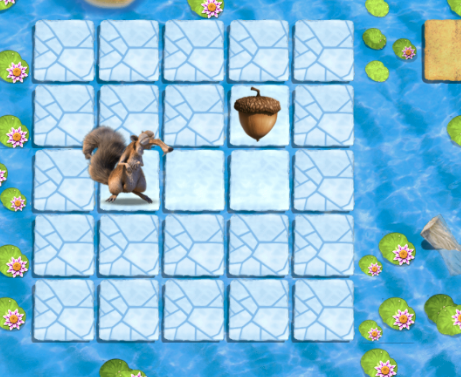
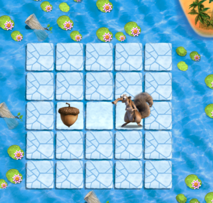

Lesson 7: Sequencing
Link to Lesson:
Code.org Sequencing with ScratSuggestions/Tips:
You can skip the "Behaving in the Computer Lab" section since the students arlready know how to respectfully use computers. Feel free to also skip the bridging activity if the students already know how to drag and drop on a computer.
In this lesson, the student will be playing with the code.org online puzzles. The goal is to move Scrat (the animal) to the acorn by dragging and dropping the instructions in the correct order. Consider doing the first one togehter as a class. Online Puzzle #1
When you are ready to have the students work on their own, have them start here: Starting Link for Students
If a student finishes all 7 puzzles, you can direct them to this link for some more challenging puzzles: More Challenging Puzzles *The website should take the students here after they finish the starting 7 puzzles, but in case it doesn't, this is the link. Have the students stop after they've finished all 12 of these puzzles.*
For clarity: you should have the students complete the
- Lesson 2: Sequencing with Scrat puzzles Lesson 2 Puzzles
- Lesson 5: Programming with Scrat puzzles (if time permits) Lesson 5 Puzzles
Corresponding QuizIt Question:
The following question is the same question students will see when they log into QuizIt. This question is shown here as a "teacher-check" to ensure that the material asked in the question has been covered in the lesson. Please do not go over the answer to this question during the lesson. We want to see if the students can apply what they learned in class to answer this question.
Which of the following sequence of actions will get Scrat to the Acorn? (the correct answer is bolded)

- When Run: E, E, N
- When Run: N, N, E
- When Run: S, E, N
- When Run: W, N, E, S
Additional Practice Questions:
Feel free to go over these questions in class as an "end of lesson review"
Which of the following sequence of actions will get Scrat to the Acorn?

- When run: S, S
- When run: W, W
- When run: S, E, N
- When run: W, N, E